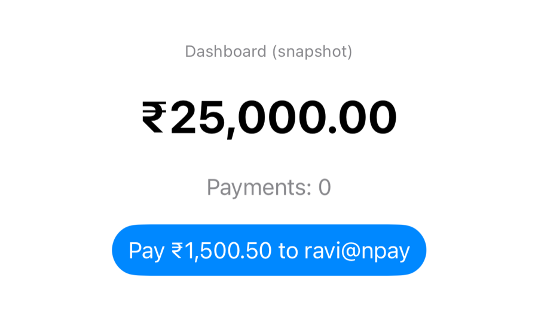
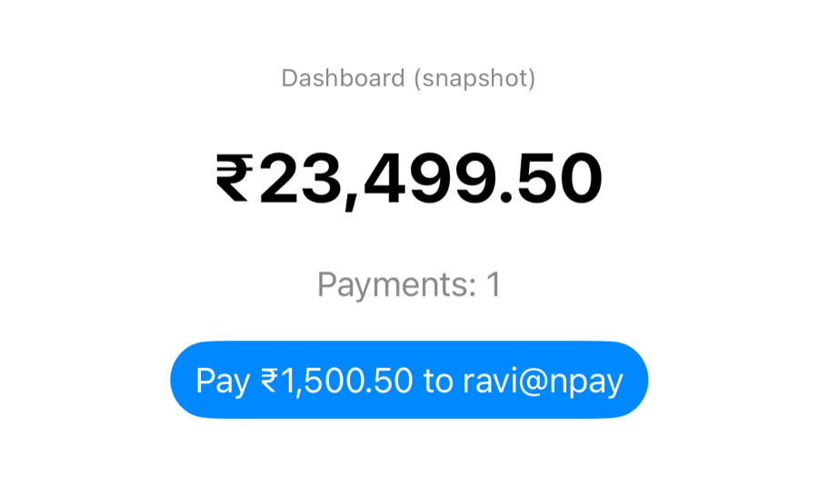

Unit 04 · Lesson 4.5
In memory today, a database and an API tomorrow: one contract for NPay’s account data.
Lesson 4.5 · Outcomes
Explain what a repository abstracts, and what it doesn’t
Design an atomic repository operation
Use an actor to protect in-memory account state
Map storage errors to payment errors
Share one repository across ViewModels and refresh deliberately
Tell concurrency safety from atomicity and idempotency
Lesson 4.5 · Where we are
Unit 04 · Application Architecture & MVVM
Part 1
Who should know where data lives?
Part 1 · The problem with our current design (section 1)
Part 1 · What exactly is a repository? (section 2)
let balance = try await
repository.fetchBalance()| Repository | Service / use case |
|---|---|
| Retrieves and stores domain data | Coordinates application behaviour |
| Abstracts data sources | Enforces business workflows |
fetchBalance() | sendPayment() |
fetchTransactions() | Validate and execute a transfer |
saveTransaction() | Decide when to save, what to return |
Part 2
Models and one atomic operation
Part 2 · Target architecture and domain models (sections 3–4)
struct PaymentRecord: Identifiable, Sendable {
let id: UUID
let recipient: String
let amountPaise: Int
let createdAt: Date
}
struct AccountSnapshot: Sendable {
let balancePaise: Int
let transactions: [PaymentRecord]
}PaymentRecord: avoids Unit 3’s TransactionSendable: safe across isolation (Unit 8)Part 2 · The repository contract (section 5)
enum AccountRepositoryError: Error {
case invalidRecipient
case invalidAmount
case insufficientBalance
}
protocol AccountRepository: Sendable {
func fetchSnapshot() async throws -> AccountSnapshot
func recordPayment(
recipient: String,
amountPaise: Int
) async throws -> PaymentRecord
}Part 3
In memory, isolated, testable
Part 3 · An in-memory repository (section 6)
actor InMemoryAccountRepository: AccountRepository {
private var balancePaise: Int
private var transactions: [PaymentRecord] = []
init(initialBalancePaise: Int = 2_500_000) {
self.balancePaise = initialBalancePaise
}
func fetchSnapshot() async throws -> AccountSnapshot {
AccountSnapshot(balancePaise: balancePaise, transactions: transactions)
}
func recordPayment(recipient: String, amountPaise: Int)
async throws -> PaymentRecord {
let trimmed = recipient.trimmingCharacters(
in: .whitespacesAndNewlines)
guard !trimmed.isEmpty else { throw AccountRepositoryError.invalidRecipient }
guard amountPaise > 0 else { throw AccountRepositoryError.invalidAmount }
guard amountPaise <= balancePaise else {
throw AccountRepositoryError.insufficientBalance }
let payment = PaymentRecord(id: UUID(), recipient: trimmed,
amountPaise: amountPaise, createdAt: .now)
balancePaise -= amountPaise
transactions.insert(payment, at: 0)
return payment
}
}Part 3 · Actor isolation, measured (section 7)
two ₹1,500 payments at once, ₹2,000 balance:
a@npay: recorded
rejected: insufficientBalance
balance 50000, transactions 1
1,000 concurrent ₹1 payments, ₹500 balance (ours):
recorded 500, rejected 500; balance 0
Which request wins isn’t guaranteed; that one wins is.
Part 3 · Test the repository without SwiftUI (sections 8, 19)
Before: 2500000
Payment ID: 870B57C9-0ECC-4DE2-95EF-964FFA8A7050
After: 2349950
Transactions: 1
Repository test passed
Correctly rejected
Part 4
RepositoryPaymentService and typed errors
Part 4 · Connect the repository to a payment service (sections 9, 15)
@MainActor
final class RepositoryPaymentService: PaymentService {
private let repository: any AccountRepository
init(repository: any AccountRepository) {
self.repository = repository
}
func send(_ request: PaymentRequest) async throws
-> PaymentReceipt {
do {
let payment = try await repository.recordPayment(
recipient: request.recipient,
amountPaise: request.amountPaise)
return PaymentReceipt(transactionID: payment.id,
recipient: payment.recipient,
amountPaise: payment.amountPaise)
} catch AccountRepositoryError.invalidRecipient {
throw PaymentError.invalidRecipient
} catch AccountRepositoryError.invalidAmount {
throw PaymentError.invalidAmount
} catch AccountRepositoryError.insufficientBalance {
throw PaymentError.insufficientBalance
} catch {
throw PaymentError.unknown
}
}
}PaymentErrorPart 4 · The call chain and error propagation (sections 10, 16)
A receipt goes back up; the router navigates afterwards, not the repository.
repository: AccountRepositoryError.insufficientBalance
service: PaymentError.insufficientBalance
(blank recipient → PaymentError.invalidRecipient)
ViewModel (4.4): “Payment could not be completed.”
Part 5
Snapshots and explicit refresh
Part 5 · Dashboard and dependencies (sections 11, 17)
@MainActor
@Observable
final class DashboardViewModel {
private let repository: any AccountRepository
var balancePaise = 0
var transactions: [PaymentRecord] = []
init(repository: any AccountRepository) {
self.repository = repository
}
func refresh() async throws {
let snapshot = try await repository.fetchSnapshot()
balancePaise = snapshot.balancePaise
transactions = snapshot.transactions
}
}@MainActor
final class NPayDependencies {
let repository: any AccountRepository
let paymentService: any PaymentService
init() {
let repository = InMemoryAccountRepository()
self.repository = repository
self.paymentService = RepositoryPaymentService(
repository: repository)
}
func makeDashboardViewModel() -> DashboardViewModel {
DashboardViewModel(repository: repository)
}
func makePaymentViewModel() -> PaymentViewModel {
PaymentViewModel(service: paymentService)
}
}a new DashboardViewModel, before refresh: 0
on its own InMemoryAccountRepository(): 2500000, never our payments
Part 5 · Refresh the dashboard (section 18)

Paid, no refresh

Paid, then refresh()
no refresh: shows ₹25,000.00, 0
repository: 2,349,950, 1
refresh: ₹23,499.50, 1
let receipt = await paymentViewModel.submit()
if receipt != nil {
try? await dashboardViewModel.refresh()
}Part 6
Behind the repository
Part 6 · Repository vs data source; caching (sections 12–13)
| Data or operation | Approach |
|---|---|
| Transaction history | Cached display, background refresh |
| Profile preferences | Local persistence, synchronized |
| Available balance | Server-authoritative; label any cached value |
| Payment execution | Server-authoritative, never an offline cache write |
| Payment status | Reconcile with the authoritative status |
Part 7
Atomic, and only once
Part 7 · Repository consistency (section 14)
let balance = try await repository.fetchBalance()
guard balance >= amount else {
throw PaymentError.insufficientBalance
}
try await repository.saveTransaction(payment)
try await repository.updateBalance(balance - amount)two ₹1,500 payments at once, ₹2,000 balance
split read / save / update, on an actor (ours):
both accepted: 2 transactions, ₹3,000
balance ₹500 (each wrote 2,000 − 1,500)
recordPayment (one call): 1 accepted, 1 rejected
Part 7 · Duplicate payment requests (section 20)
transactions 2, balance 2,199,900
(₹1,500.50 taken twice)
| Concurrency safety | Idempotency |
|---|---|
| Safe concurrent access to state | The same logical request applied once |
| The actor provides it | Needs a request identifier |
Lesson 4.5 · Recap
A repository hides where data lives
one contract: fetchSnapshot, recordPayment
One atomic actor call
1 of 2 accepted; the split workflow took ₹3,000 from ₹2,000
Share it; refresh deliberately
one repository, two ViewModels, explicit refresh
Review
Check your understanding · 1 of 10
What does a repository primarily abstract?
Memory, database or API: the caller can’t tell.
Common trap: Putting business workflows in the repository.
Check your understanding · 2 of 10
Does LazyVStack automatically provide database pagination?
Lazy views, not lazy data (3.11).
Common trap: Confusing layout with data loading.
Check your understanding · 3 of 10
Why expose recordPayment as one operation?
Split calls took ₹3,000 from ₹2,000.
Common trap: Exposing save and update separately.
Check your understanding · 4 of 10
Does actor isolation automatically provide durable database transactions?
It protects one instance’s memory, nothing on disk.
Common trap: Treating an actor like a database.
Check your understanding · 5 of 10
Should DashboardViewModel and PaymentViewModel use independent account repositories?
A separate one showed ₹25,000 forever.
Common trap: Two sources of truth.
Check your understanding · 6 of 10
Does a successful payment guarantee that a subsequent dashboard refresh will succeed?
Separate operations; handle each outcome.
Common trap: Reading a failed refresh as a failed payment.
Check your understanding · 7 of 10
Does actor isolation automatically prevent duplicate logical payment requests?
The same request twice: two transactions.
Common trap: Confusing safety with idempotency.
Check your understanding · 8 of 10
The section 14 workflow (read balance, await, save, update) runs twice at once: ₹1,500 each from ₹2,000, on an actor. Result?
Both read 2,000 before either wrote.
Common trap: Assuming actor methods make workflows atomic.
Check your understanding · 9 of 10
One repository; the payment ViewModel pays ₹1,500.50; the dashboard ViewModel isn’t refreshed. It shows…
A snapshot; the repository holds 2,349,950.
Common trap: Expecting snapshots to update themselves.
Check your understanding · 10 of 10
From Lesson 4.4: in private let repository: ___ AccountRepository, which keyword makes existential use explicit?
any AccountRepository: any conforming value.
Common trap: Mixing up some and any.
Lesson 4.5 · Where this goes next
| Lesson | Topic | Builds on today |
|---|---|---|
| 4.6 | Domain models & use cases | SendPaymentUseCase over the repository |
| 4.7 | UI state modeling | PaymentError becomes specific messages |
| Units 5–6 | Networking; persistence | remote and local data sources behind the repository |
| Unit 8 | Concurrency | actor reentrancy, beyond today’s split workflow |
Lesson 4.5 · Lab
Contract, actor, service, dashboard.
Lesson 4.5 complete
Next: Lesson 4.6 — Domain Models & Use Cases